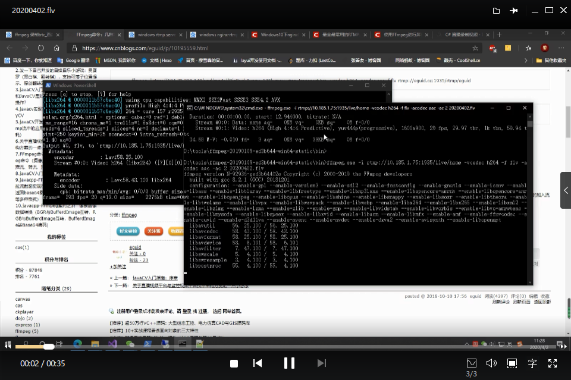

上篇博客介绍了我们借助腾讯的trtc服务完成了一个音视频系统，在介绍到关于直播录制的内容时，我们用到的是百度的lss，赶上这次的特殊时期，公司在音视频应用方面的探索明显比以前更加的积极，当然也踩了一些坑，所以就简单研究了一下关于直播推流，视频点播等相关的内容。考虑到之前用过ffmpeg，还写过一篇分享的博客（传送门:https://tony_df.gitee.io/hexo/2019/01/31/%E5%88%86%E4%BA%AB%E4%B8%80%E4%B8%AA%E5%A4%84%E7%90%86%E8%A7%86%E9%A2%91%E6%96%87%E4%BB%B6%E7%9A%84%E5%88%A9%E5%99%A8/）做过批量的视频格式转换，所以还是在基于ffmpeg这个工具上又做了一些扩展性的探索，主要是录像，直播推流，拉流以及转流，接下来分别介绍下这几个功能。
说起来，像ffmpeg这种灵活性很强的工具，我们就应该像记住怎么使用微信一样，记住怎么使用FFmpeg。这可能有点难理解，主要是因为这个轮子已经非常强大了，我们没必要浪费时间在处理相关业务的时候再自己去开发一个轮子，就像我们聊天的时候没必要再去找一个聊天软件，有微信就可以了。
1.录像
录像我觉得主要是两种需求
一是录屏幕，就是把你的操作过程录下来，主要用在录制操作流程，教程的方面；
另一个就是调用摄像头来录像；
这两点FFmpeg都可以轻松做到
首先要录像的话，需要检测一下设备，摄像头，麦克风之类的，当然如果你要录屏的话，摄像头不是必须的，但需要安装一个小插件，名字叫：dshow
下载地址：https://sourceforge.net/projects/screencapturer/files/(其实不安装也可以，下面我会介绍到)
然后通过如下指令获取音视频设备
1 | ffmpeg -list_devices true -f dshow -i dummy |
回车确定后，计算机给出设备列表，如下
我画红圈的地方，是我们获取的录屏软件的设备名字，如果需要录屏的话，借助刚才我们安装的screen-capture-recorder来完成，通过如下指令来操作
只录制视频
1 | ffmpeg -f dshow -i video="screen-capture-recorder" v-out.mp4 |
只录制音频
1 | ffmpeg -f dshow -i audio="screen-capture-recorder" a-out.aac |
同时录制音视频
1 | ffmpeg -f dshow -i video="screen-capture-recorder":audio="virtual-audio-capturer" av-out.mp4 |
还可以查看一些视频录制的可选参数
1 | ffmpeg -f dshow -list_options true -i video="screen-capture-recorder" |
我的机器得到的结果如下
通过这些参数，我们可以制定录制的一些特殊选项，比如指定录制的长宽比，帧率，清晰度等
1 | ffmpeg -f dshow -video_size 1680x1050 -framerate 30 -pixel_format yuv420p -i video="screen-capture-recorder":audio="virtual-audio-capturer" av-out.mp4 |
再看一下录制后的视频效果

前面指定的设备名字，如果改成摄像头和麦克风的名称，就可以录制实时拍到的画面了，比如我的输入摄像头名字为c922 Pro Stream Webcam，为了获取摄像头的画面，就可以这样
1 | ffmpeg -f dshow -i video="c922 Pro Stream Webcam" v-out.mp4 |
录下来的画面是这样
前面我提到,不通过screen-capture-recorder也可以录屏的，相关的指令如下
1 | ffmpeg -f gdigrab -i desktop out.mp4 |
同样，也可以指定屏幕尺寸和帧率
1 | ffmpeg -f gdigrab -framerate 5 -offset_x 10 -offset_y 20 -video_size 640x480 -i desktop out.mp4 |
注意，这个gdigrab是基于GDI的抓屏设备,只适用于Windows环境的，linux的环境我这里没有介绍，因为我也没在linux上玩转，所以留到该系列的第3篇再写吧~
2.直播推流
推流的话，需要准备一个流媒体服务，如果你有私人的服务器，或者可以在自己设备或者公司服务器上测试的话，可以自己搭一个流媒体服务，这里我还是只介绍Windows环境下的，更深入详尽，包括linux下的配置介绍留到系列第3篇。
首先，需要在服务器安装nginx，同时安装nginx-rtmp-module组件,下载地址https://github.com/arut/nginx-rtmp-module/#start-of-content,这里呢，我分享一个已经配置好的nginx的完整版（也是前人整理的），你下载下来修改一下配置文件，就可以直接使用，链接地址: https://pan.baidu.com/s/1a7MFkkftCq8kAm44kQRJmA 提取码: ydsj
下载下来后，查看conf路径下的nginx-win-rtmp.conf
上图是rtmp协议的相关配置，其他的如果你需要修改nginx的指定端口，再自行修改就可以了，我这里就不多说了
另外，关于rtmp协议，其实还是有很多东西值得说，和http协议一样，rtmp也是建立在tcp传输协议上的，只不过直播的时候，我们常用rtmp或者rtsp，而点播的时候一般用http，更多内容自行百度吧。
好了，当我们配置好流媒体服务之后，就可以做推流了。
比如，我们把屏幕录制的视频推流到流媒体服务，然后通过拉流或者类似VLC media player这种软件，就可以实时看到我们推流的内容了，
屏幕推流的指令如下
1 | ffmpeg -f gdigrab -i desktop -vcodec libx264 -preset:v ultrafast -tune:v zerolatency -f flv rtmp://10.185.1.75:1935/live/home |
推流后的效果
然后，通过VLC软件，看到我们实时推流的画面
同样的，通过ffmpeg同组的ffplay工具一样可以查看，指令如下
1 | ffplay rtmp://10.185.1.75:1935/live/home |
除了可以推送录制的视频,我们也可以把本地已有的视频资源进行推流，指令如下
1 | ffmpeg.exe -re -i film.flv -vcodec copy -acodec copy -f flv -y rtmp://10.185.1.75:1935/live/home |
3.拉流
拉流的操作除了借助VLC或者ffplay直接播放推流画面外，我们也可以把拉流的数据保存成文件，如同保留录像资源，为后续的点播服务做准备，
操作指令为
1 | ffmpeg -i rtmp://10.185.1.75:1935/live/home -vcodec h264 -f flv -acodec aac -ac 2 save.flv |
关于推拉流的操作，在nginx的日志下都会记录
4.转流
转流操作我没有试，但看到有教程有相关介绍，我这里直接引用一下
以rtsp转rtmp为例
1 | ffmpeg -i rtsp://184.72.239.149/vod/mp4://BigBuckBunny_175k.mov -rtsp_transport tcp -vcodec h264 -acodec aac -f flv rtmp://0.185.1.75:1935/live/home |
大概就是这些，这里面还是有一些关键的配置项没有说清楚，比如码率相关的协议，h.264，h.265，以及采用rtmp的协议，支持的视频格式就是flv和f4v，如果需要推送视频的话，需要对视频先进行格式转换，然后在推流，而rtsp则是支持mov，MP4等格式的。
总的来说，关于ffmpeg在上篇的基础上，扩展了不少东西，同样的，也带来了更多需要思考的问题，关于配置的细节，ffmpeg的机制等等，ffmpeg虽然很强大，但不是谁都可以快速上手的，最好是在理解其工作原理的基础上进行操作，这样我们也会更加的熟练。好了，这个系列的第二篇就聊到这里吧，没说清楚的内容，留到第三篇吧。
————————–以下为4.3日后的补充内容（觉得原文写的很好，担心链接失效，故摘录于此）—————————-
另外，额外说两句关于转码时的相关参数(这里是引用另外一位博友的内容，供大家参考)
1 | ffmpeg -i INPUT.AVI -vcodec libx264 -preset slower -crf 18 -threads 4 -acodec copy OUTPUT.MKV |
-i 待转码文件
-vcodec 选择视频编码。做过一番搜索，相比与MPEG2, MPEG4等，H.264是公认最好的高清编码格式，同时压缩率也高于MPEG4，所以我选择使用H.264(libx264)进行视频编码。
-preset 选择编码预设，更慢=更好的视频质量，可选取值为 ultrafast,superfast, veryfast, faster, fast, medium, slow, slower, veryslow, placebo。placebo是没用的取值。
-crf Constant Rate Factor，0~51之间取值，0为无损，23为默认取值，取值越大，视频整体质量越差。一般建议在18～28之间取值。18已经达到视觉无损的效果，即人眼几乎察觉不到和原片的差别。
-threads 编码使用线程数，CPU几个核心就设置几个线程好了。
-vf 滤镜，我们只需要用到旋转滤镜transpose=2，transpose滤镜可取0-3，0为逆时针90°且垂直翻转，1为顺时针旋转90°，2为逆时针旋转90°，3为顺时针90°且垂直翻转。
-acodec 音频编码，这里直接设置为copy保留原文件音频编码。
最后设置输出文件为OUTPUT.MKV
在简单说一下关于码率，帧率，分辨率的区别和联系（传送门:http://www.voidcn.com/article/p-tneeoreg-wn.html）
视频文件一般涉及到三个参数：帧率、分辨率和码率。
1.区别
帧率：每秒显示的图片数。影响画面流畅度，与画面流畅度成正比：帧率越大，画面越流畅；帧率越小，画面越有跳动感。
由于人类眼睛的特殊生理结构，如果所看画面之帧率高于16的时候，就会认为是连贯的，此现象称之为视觉暂留。
并且当帧速达到一定数值后，再增长的话，人眼也不容易察觉到有明显的流畅度提升了。
分辨率：(矩形)图片的长度和宽度，即图片的尺寸。
码率：把每秒显示的图片进行压缩后的数据量。影响体积，与体积成正比：码率越大，体积越大；码率越小，体积越小。 （体积=码率×时间）
2.联系
帧率×分辨率=压缩前的每秒数据量(单位应该是若干个字节)
压缩比=压缩前的每秒数据量/码率 （对于同一个视频源并采用同一种视频编码算法，则：压缩比越高，画面质量越差。
所谓“清晰”，是指画面十分细腻，没有马赛克。并不是分辨率越高图像就越清晰。
简单说： 在码率一定的情况下，分辨率与清晰度成反比关系：分辨率越高，图像越不清晰，分辨率越低，图像越清晰。
在分辨率一定的情况下，码率与清晰度成正比关系，码率越高，图像越清晰；码率越低，图像越不清晰。
但是，事实情况却不是这么简单。可以这么说： 在码率一定的情况下，分辨率在一定范围内取值都将是清晰的；
同样地，在分辨率一定的情况下，码率在一定范围内取值都将是清晰的。
在视频压缩的过程中， I帧是帧内图像数据压缩，是独立帧。而P帧则是参考I帧进行帧间图像数据压缩，不是独立帧。
在压缩后的视频中绝大多数都是P帧，故视频质量主要由P帧表现出来。由于P帧不是独立帧，而只是保存了与邻近的I帧的差值， 故实际上并不存在分辨率的概念，应该看成一个二进制差值序列。而该二进制序列在使用熵编码压缩技术时会使用量化参数进行有损压缩，视频的质量直接由量化参数决定，而量化参数会直接影响到压缩比和码率。 视频质量可以通过主观和客观方式来表现，主观方式就是通常人们提到的视频清晰度，而客观参数则是量化参数或者压缩比或者码率。在视频源一样，压缩算法也一样的前提下比较，量化参数，压缩比和码率之间是有直接的比例关系的。 分辨率的变化又称为重新采样。由高分辨率变成低分辨率称为下采样，由于采样前数据充足，只需要尽量保留更多的信息量，一般可以获得相对较好的结果。而由低分辨率变成高分辨率称为上采样，由于需要插值等方法来补充（猜测）缺少的像素点，故必然会带有失真，这就是一种视频质量（清晰度）的损失。
压缩前数据量(体积)=分辨率×帧率 130万像素经过压缩以后，压缩率去处系统开销以后，一般在30倍以上，所以： 1300000*25(帧)/1024/30（压缩率）=1057Kbps
————————————引用结束———————————-